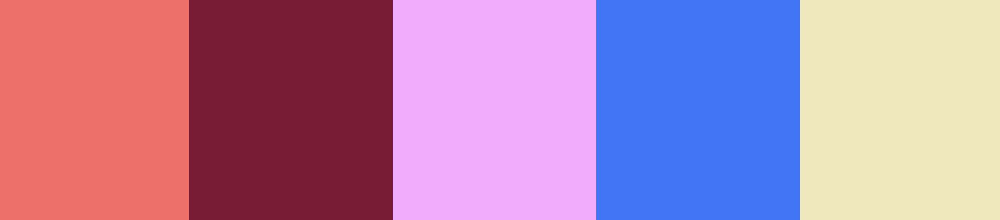

Caty's Home
Heading 2
Heading 3
Hello World! Make a small website about a
passion or interest of yours. We’ll be using
this project as a way to introduce ourselves,
as well as a space to practice and experiment
writing html and css. An important goal of
this project is to allow yourself to experiment
and remain flexible with the presentation of
the site. Most likely, this is the first site
you will be writing by hand — try to let it
grow and learn with you! Start by collecting
content about the passion you've chosen from
wherever that content is found: internet,
books, outside (maybe it is content you have
authored yourself) and then start to write
your code. Link
Most likely, this is the first site
you will be writing by hand — try to let it
grow and learn with you!
Here's a lnk
- Oranges
- Apples
- Peaches
